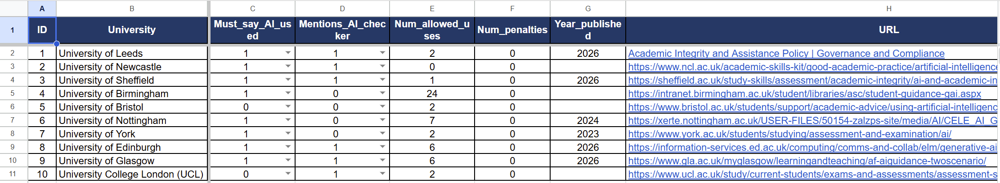

Week 4 – Reflection
This week was our first group project. Before the term started, I felt a little nervous about group work, but my group members were very nice and our discussion went well. Professor Holly gave us two scenarios, and we chose Scenario 2. We acted as a data analysis company and looked at how UK universities deal with generative AI and academic integrity. After we emailed Holly about our ideas, we chose our topic: the AI rules for students at 10 Russell Group universities. You can see more details about our topic in the document below.
The most useful part for me was turning words into numbers. At first, we wanted to compare how strict each university is. But we found that "strict" is hard to measure, because different people may judge it in different ways. We also had to think about ethics. First, we wanted to protect people's privacy, so we did not collect any names or personal information about students or staff. Second, we wanted to respect each university's choices. Some universities only share their AI rules with their own students, and you need a login to see them. For example, we could not open Manchester's guide, so we chose Newcastle instead. We only used pages that anyone can open.
I also learned that a dataset only shows part of the story. Our data comes from university websites, so it shows what universities say, not what students really do. We were worried that many guides would look the same. But Holly told us that similarity is also a finding, because it may show that universities are responding to AI in a similar way.
Once we had a clear plan, we worked fast and finished almost everything in one afternoon. I feel proud of our work. Next week we will learn about data visualisation, and I am looking forward to seeing our numbers turned into charts.
Here is the dataset we made:
